Password agent installation guide
The Check ID password agent module is a simple module made for listening to change password requests from CheckID, executing the password change in the local Active Directory and reporting back the status of the password change. There are a few steps required to install the module and run it:
Requirements
- The agent must be running on a domain joined windows server
- PowerShell 7.5 or newer installed
- AD PowerShell installed (
Install-WindowsFeature -Name RSAT-AD-Tools -IncludeAllSubFeature)
Step 1 - Configure CheckIDPasswordAgent requirements
Run the following as administrator, while will register an event source in the event log and create a certificate for authentication:
New-EventLog -LogName "Application" -Source "CheckIDPasswordAgent"
$Certificate = New-SelfSignedCertificate -Subject "CheckIDAgent" -NotAfter (Get-Date).AddYears(100)
[System.Convert]::ToBase64String($Certificate.Export([System.Security.Cryptography.X509Certificates.X509ContentType]::Cert), "InsertLineBreaks") | Set-Content -Path "CheckIDAgent-$($env:COMPUTERNAME).cer"
"","Thumbprint: $($Certificate.ThumbPrint)", "Certificate file: CheckIDAgent-$($env:COMPUTERNAME).cer","Agent id: $(New-Guid)","" | Write-Host
Open certlm.msc, find the certificate and find Managed Private Keys. Allow any account that will be running the CheckID agent Full access to the certificate:
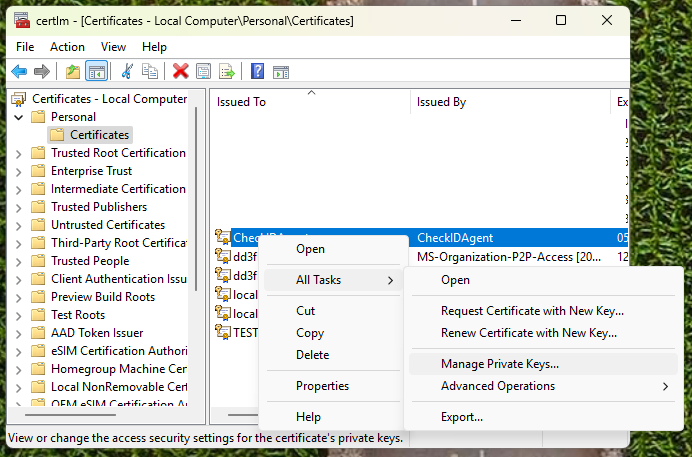
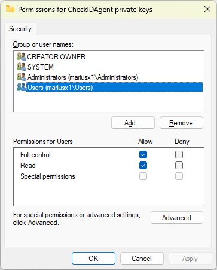
Note: The gMSA created in step 5 also needs this permission
Step 2 - Consent to Fortytwo Universe (Our API) and create app registration for agent
-
As a global administrator, admin consent to this.
-
In Entra ID, go to App registrations and click New registration
-
Give it a name and create Register
-
Note down the Client ID and Tenant ID:
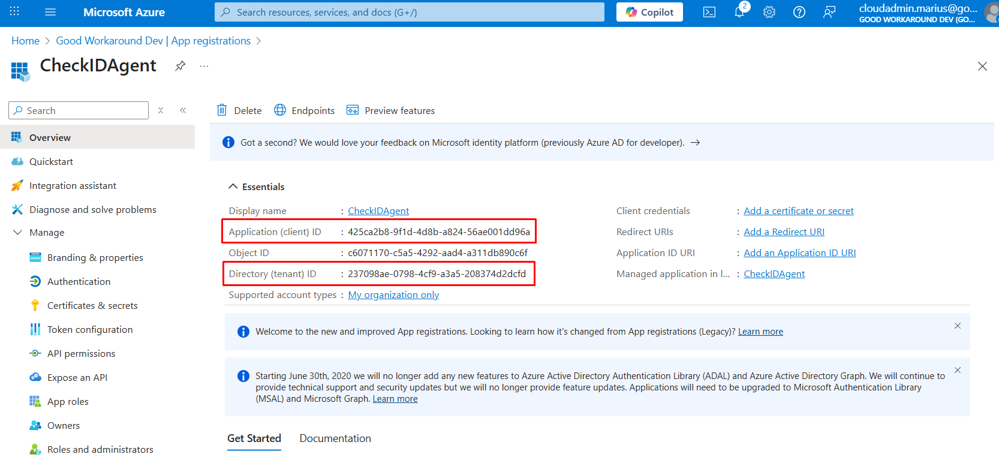
- Under Certificates & secrets upload the certificate file created in Step 2
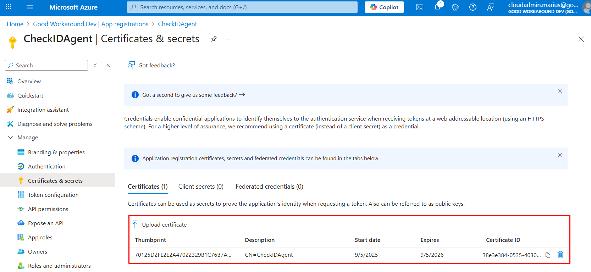
- Under API permissions, click Add a permission, select APIs my organization uses and locate Fortytwo Universe
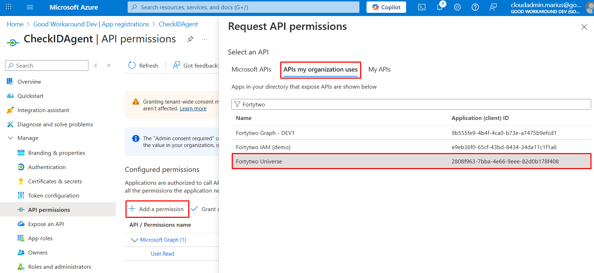
- Under Application permissions check checkid_agent.all and click Add permissions*.
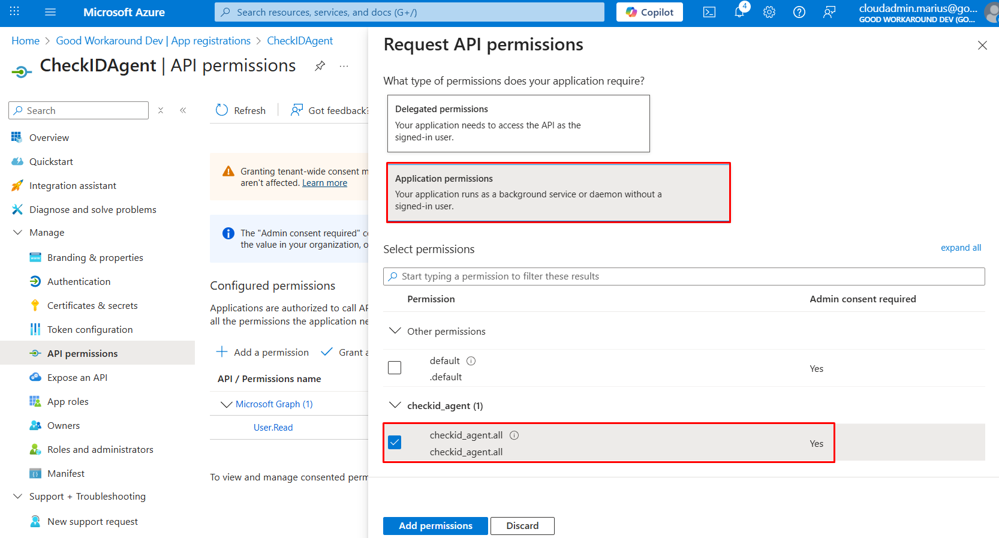
- Click Grant admin consent
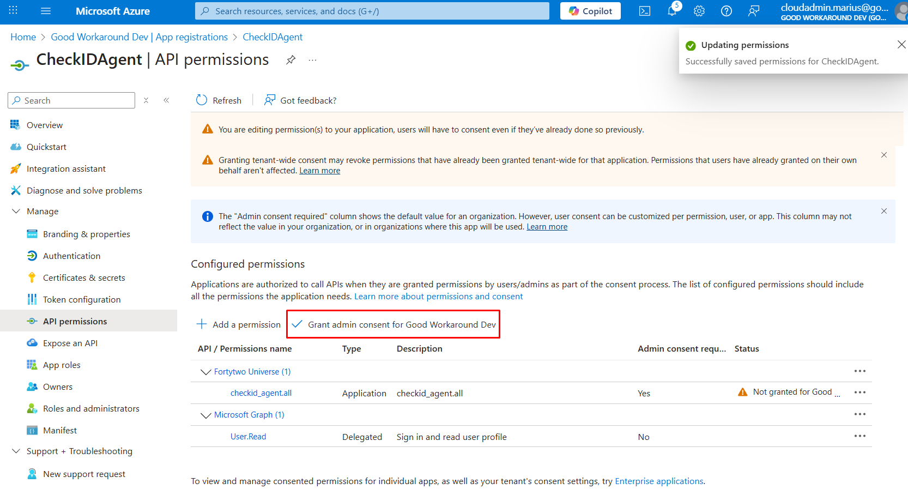
Step 3 - Create the run file for the CheckID Agent
Create C:\checkid\run.ps1 with the following contents:
# Install and auto update the PasswordAgent module
Install-Module Fortytwo.CheckID.PasswordAgent -Confirm:$false -Force -Verbose -Scope CurrentUser
Import-Module Fortytwo.CheckID.PasswordAgent -force
Add-EntraIDClientCertificateAccessTokenProfile `
-Resource "2808f963-7bba-4e66-9eee-82d0b178f408" `
-Thumbprint "THUMBPRINT_FROM_STEP2" `
-ClientId "CLIENT_ID_FROM_STEP3" `
-TenantId "TENANT_ID_FROM_STEP3"
Connect-CheckIDPasswordAgent `
-AgentID "AGENTID_FROM_STEP2" `
-Verbose
Start-CheckIDPasswordAgentListener -Sleep 2 -Verbose
Step 4 - Try to run the CheckID Agent manually
- Open a PowerShell and run
cd c:\checkid ; . c:\checkid\run.ps1
At this point, you can test out CheckID and see that a password change is received by the agent.
Step 5 - Run the CheckID agent as a scheduled task
Create a gMSA for the scheduled task
Run the below PowerShell in order to create a gMSA:
New-ADServiceAccount -Name "checkidagent" -PrincipalsAllowedToRetrieveManagedPassword "SERVERNAME$" -DNSHostname "checkid.no"
Delegate the gMSA the reset password permission in AD
For each OU where the CheckID agent should be able to reset passwords, run the following three PowerShell lines (with the correct OU path and domain name):
dsacls "OU=Users,DC=contoso,DC=com" /I:S /G '"contoso.com\checkidagent$:CA;Reset Password";user'
dsacls "OU=Users,DC=contoso,DC=com" /I:S /G '"contoso.com\checkidagent$:rpwp;PwdlastSet";user'
dsacls "OU=Users,DC=contoso,DC=com" /I:S /G '"contoso.com\checkidagent$:rpwp;lockoutTime";user'
Grant permission to certificate
Run certlm.msc, locate the CheckIDAgent certificate under Personal certificates, and Manage private keys
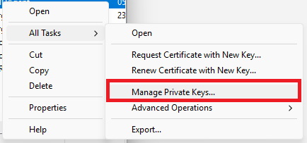
Locate the gMSA you created, and grant Full control
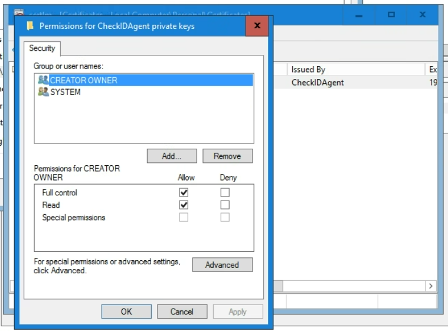
Grant permission to Log on as a batch job
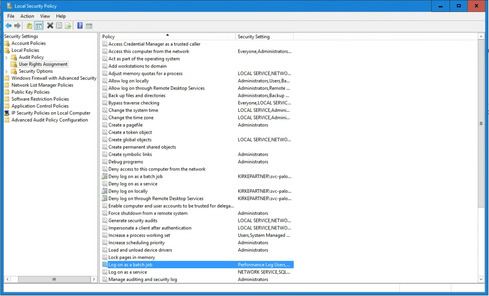
Create scheduled task
- Create a scheduled task running as the gMSA that:
- Runs the action
pwshwith the arguments-file c:\checkid\run.ps1 - Run daily, repeat every 2 minutes (Just in order to restart the task if it fails)
- Do not run multiple instances
- Runs the action
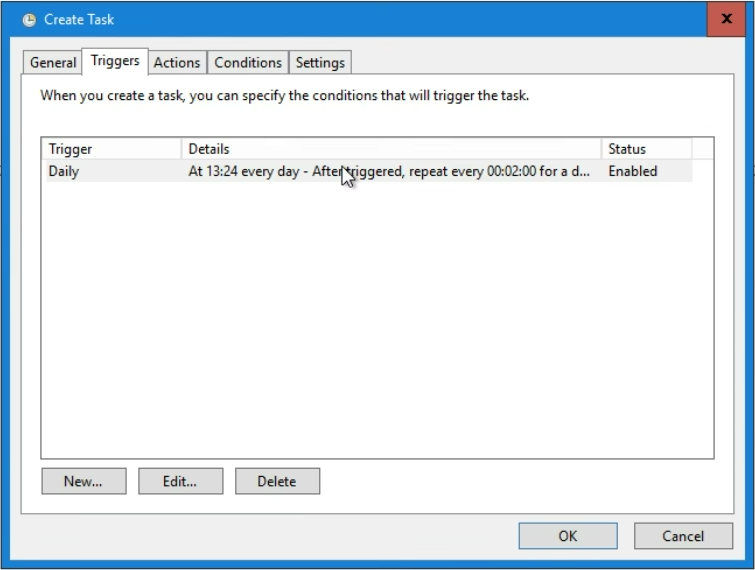
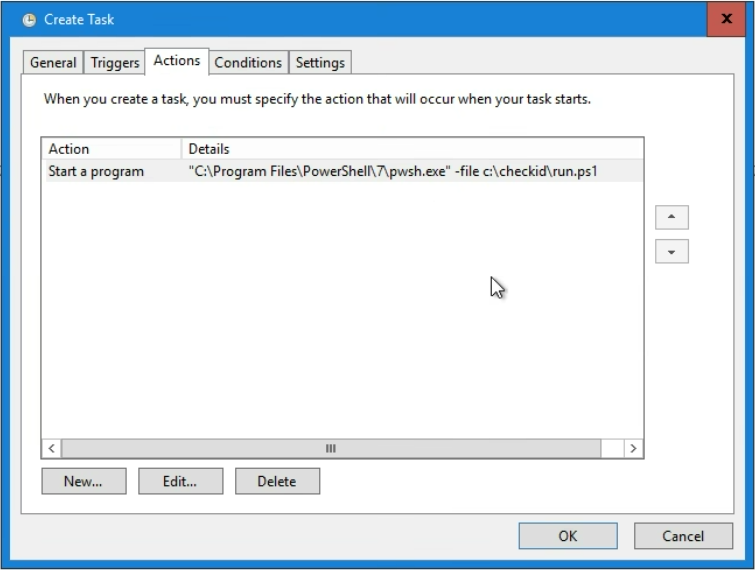
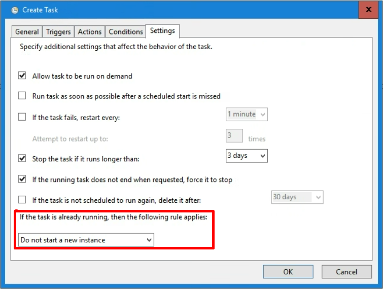
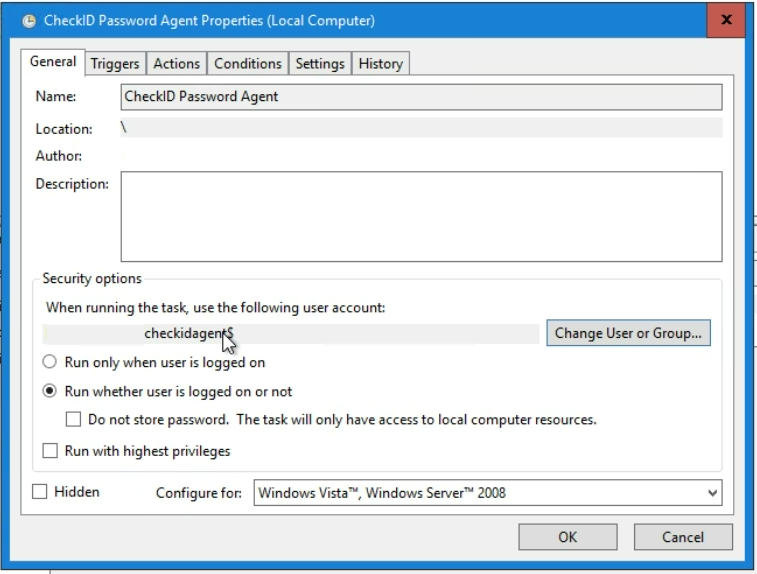